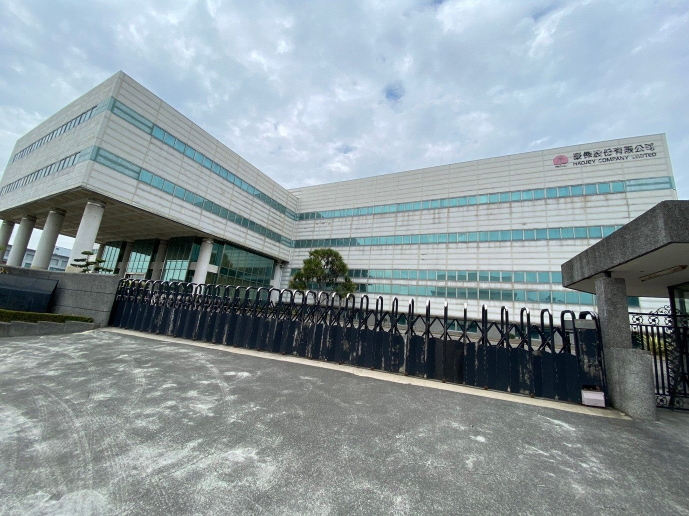
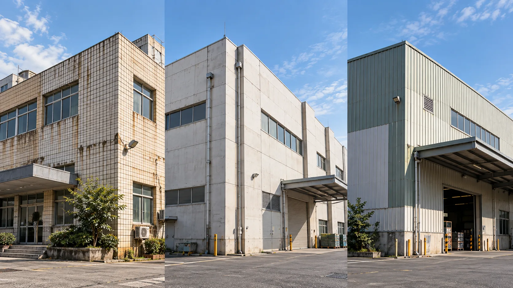
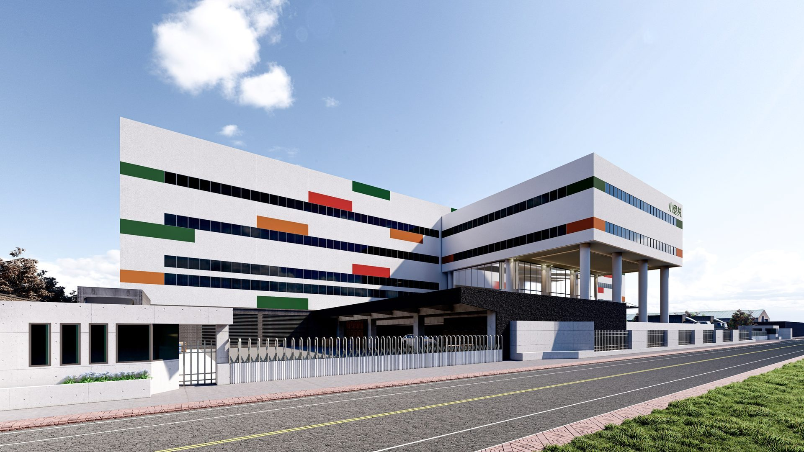
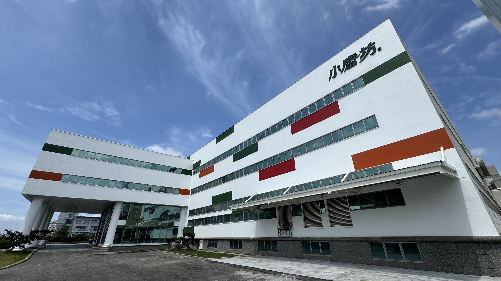

01 外牆翻新前，先評估哪些項目？
在決定材料或施工方式前，先建立清楚的現況紀錄，有助於避免估價範圍不一致，也能讓後續方案比較更有依據。
基底與舊塗層
檢查結構裂縫、空鼓、表面粉化、鋼筋鏽蝕、起泡、剝落，以及既有塗層或磁磚是否附著良好。
水分滲漏與接縫
檢視窗框周邊、伸縮縫、女兒牆收邊與可能的滲水路徑，判斷是否需要先處理基底防水或耐候填縫。
環境與立面條件
考量強烈日照面、迎風雨淋面、酸雨污染來源、建築樓高及各向立面受候條件的物理差異。
施工與使用限制
確認高空作業方式（鷹架搭設或吊籠作業）、行人防護動線、鄰房影響、施工噪音時段與工期安排。
若已出現明顯剝落、持續滲水、混凝土保護層剝離或其他疑似結構性安全問題，應先安排結構技師或相關專業檢查，再評估修繕方式。表面塗裝可改善外觀並提供耐久防護，但不能直接取代必要的結構補強或源頭防水處理。
02 常見建築外牆翻新工法
外牆塗裝與高耐候防護系統
塗裝方案通常需要依基底狀況嚴格安排高壓清洗、裂縫修補打底、專用底漆與面漆等標準工序。適用性取決於既有牆體強度、舊塗層附著力、含水率與產品系統相容性。若牆面已有空鼓、剝落或持續滲水，應先根治原因，不能只靠增加面漆層數掩飾問題。
磁磚、石材或既有飾面更新（免打除工法 vs 敲除工法）
若原有飾面已鬆動、破損或有掉落安全疑慮，需依現況評估專用黏結劑固定修補、局部更換或乾式包板更新。不同基材與固定方式的處理程序不同，應將拆除成本、廢棄物清運法規、基底整平、收邊與防水細節完整納入評估，而不是單純比較表面材料單價。
GRC 造型構件與立面美學重塑
GRC（玻璃纖維強化水泥）可用於建築門面、雨遮、線板與屋頂山牆的立面造型重塑。規劃時需考量構件自重、錨固鐵件防鏽、基底結構承載、接縫彈性填塞及表面防護塗裝。若要搭配特殊塗料呈現仿石材或金屬質感，建議先透過 1:1 實體樣板確認色彩與紋理。
03 2026 外牆翻新費用怎麼估算？
外牆翻新通常沒有一個可直接套用到所有建案的單一固定價格。即使以每平方公尺計價，實際工程範圍、基底處理複雜度、高空作業難易度、材料等級與現場管理限制，都可能讓工程總價出現倍數級差異。
| 費用構成項目 | 可能影響價格的現場條件 | 估價與合約應確認事項 |
|---|---|---|
| 現況檢查與基底處理 | 裂縫深度、粉化程度、空鼓範圍、舊漆剝落、鏽蝕或壁癌滲水 | 修補範圍、施作道數、是否需先做專業結構鑑定或抓漏 |
| 材料與塗裝系統 | 滲透底漆、彈性中塗、面漆品質、仿石漆/花崗岩質感、產品保色年限 | 具體品牌型號、施工層次、材料用量檢驗與實體樣板確認 |
| 高空作業與現場防護 | 建築樓層高度、造型凹凸、鷹架或吊籠作業、周邊人車防護網與出入口保護 | 搭拆費用、防塵遮蔽、鄰房安全措施是否完整列入報價 |
| 飾面與造型細節收邊 | 窗框周邊打膠、滴水條/窗台導水板、伸縮縫更新、局部清運與修補 | 細部處理範圍、耐候填縫膠規格、清運廢棄物合法證明 |
| 工期、天候與現場管理 | 雨季施工影響、施工時段管制、住戶或廠辦營運空間是否持續使用 | 天候順延條款、分區分段施作期程、驗收標準與保固書條款 |
若參考網路公開文章常見之單價（例如每平方公尺約新台幣 2,000 元起），務必先確認其發布年份、地區、施工項目是否包含搭架、清運與底層修補。此類公開概算僅能作為初步市場概念參考，非騰煇正式報價，亦不可直接套用於高規格特殊造型或高耐候系統工程。
04 從需求到施工：建議的規劃流程
- 整理現況問題點與改善目標 拍照記錄立面褪色、磁磚裂縫、窗框滲水或希望提升的企業形象外觀，並準備建築圖面或現場尺度。
- 安排專業現場勘查與基底判定 工程人員實地檢測牆體空鼓率、含水情形、施工動線可及性與可能隱蔽的安全隱患。
- 工法可行性比對與預算收斂 依防護年限、外觀質感目標、日後維護成本與業主預算條件，討論最合宜之材料與工法組合。
- 確認實體樣板、色彩與收邊大樣 針對特殊塗料、仿石漆或 GRC 造型構件，在大面積施作前製作現場樣板，確認陽光下的色彩表現。
- 簽訂合約、確認施工計畫與品質驗收規範 將使用材料、工序規範、現場防護、分區排程、驗收查核表及正式保固年限完整載入書面合約。
05 3D 建模、BIM 與工程溝通：先確認需求，再選工具
外牆翻新常涉及多立面分區、材料交接收邊、色彩搭配與施工排程順序。若專案本身具備建築圖面或 3D/BIM 模型，可作為工程溝通的高效輔助工具，避免各方對完工效果產生想像落差。
立面色彩與材質溝通
透過電腦立面模擬與材質分區渲染，協助管委會或業主團隊討論配色方案；示意圖仍需搭配實體樣板確認。
BIM 尺寸與構件排錯
若翻新包含 GRC 造型構件或特殊外掛包板，透過 3D 放樣能提前排查原結構與新構件之干涉，杜絕工地重工。
數位工具的核心價值在於降低溝通成本，而非保證電腦畫面完全等同實體。塗料色彩會受天候光線、基底粗糙度與施工角度影響，務必以現場實體樣板為準。
06 發包或討論前的外牆翻新檢核表
- 已詳實記錄外牆現有主要損壞點（裂縫、滲水、磁磚空鼓、泛黃）。
- 已確認建築樓層高度、立面面積及高空施工設備可及性。
- 已在合約中明確劃分基底修復、止漏抓漏與表面裝飾之責任界線。
- 已載明使用之塗料品牌、產品型號、塗裝道數與官方出廠證明要求。
- 已確認報價是否完整包含高空搭架、安全防護網、現場遮蔽與廢棄物清運。
- 已訂定遇雨天候順延計算機制與分區施工時段。
- 已確認雙方認可之工程驗收標準、保固期長短與保固除外責任。
07 翻新現場實績巡禮（騰煇代表性工程）
真實工程紀錄展現基面處理與細部收邊的實力。以下為騰煇統包團隊實際執行之廠辦外牆拉皮工程實錄：




FAQ 外牆翻新常見問題
Q1: 外牆拉皮和外牆翻新有什麼差別？
兩者在一般市場用語中經常通用。實務工程內容可能從單純的高壓清洗重塗、局部防水修繕，到全棟敲除磁磚乾式包板或 GRC 重塑門面，討論時應以書面工序道數與範圍為準。
Q2: 外牆翻新一定要把原本的磁磚全部敲除嗎？
不一定。需先透過專業工具檢測既有飾面的空鼓率與牢固程度。若附著狀況良好，可採用專用界面黏結劑與抗裂砂漿層進行免打除整平拉皮，大幅減少噪音、粉塵與清運費用；但若大面積空鼓鬆脫，則必須局部敲除或全面剔除以保公共安全。
Q3: 外牆翻新每平方公尺費用大概多少？
工程費用取決於基底修補程度、材料等級、大樓高度、搭架難度與出入口動線。市場公開文章數字僅供概念參考，具體費用必須經過實地勘測與工項清單核算後正式報價。
Q4: 單純外牆噴塗可以解決牆內滲漏水嗎？
不能一概而論。塗裝主要提供正水壓面的耐候防水與毛細阻隔；若水氣來自窗框周邊矽利康老化、頂樓女兒牆開裂或內部給排水管破裂，必須先從源頭阻斷漏水點，塗料才能長久附著發揮效益。
Q5: 如何啟動與騰煇團隊的翻新討論？
您可先備齊建築外觀現況照片、所在地區、概略施工樓層面積以及目前遇到的主要外牆困擾，透過官方信箱或電話與我們聯繫，由資深工程人員進行初步評估與現勘規劃。
從現況評估開始，打造歷久彌新的立面防護
不盲目套用材料，而是以四十年工程實力，為建築診斷病灶、規劃最合適的工法與塗裝體系。歡迎提供建築資訊與照片，與騰煇工程顧問團隊展開專業討論。
預約工程勘測諮詢 →